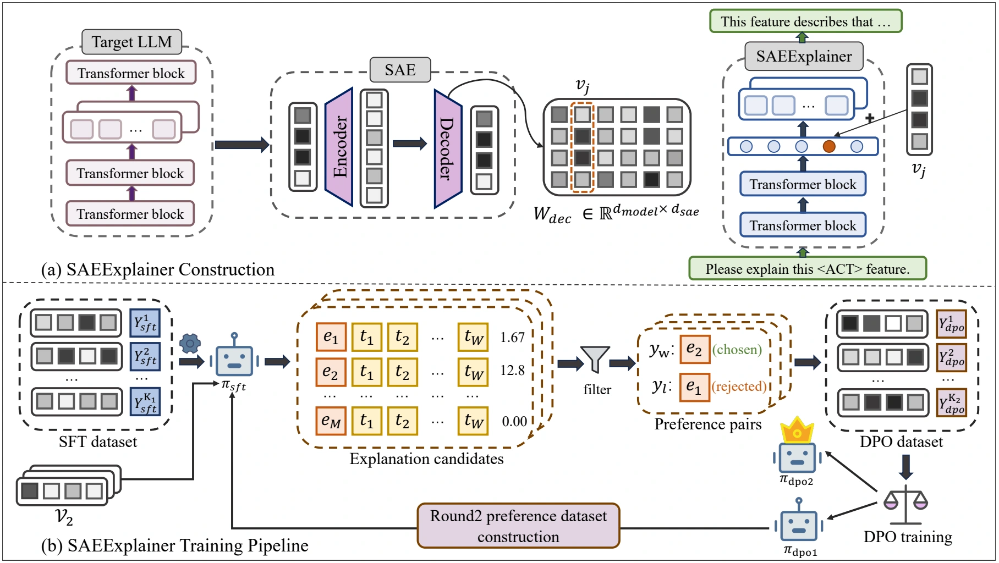

SAEExplainer: Interpreting SAE Features with
Activation-Guided Preference Optimization
1 The Chinese University of Hong Kong, Shenzhen, 2 Shanghai Jiao Tong University,
3 NJIT, 4 Jilin University, 5 Institute of Computing Technology, CAS

Overview
Sparse autoencoders identify features inside language models, but translating those features into faithful natural-language explanations remains difficult. SAEExplainer learns to describe a feature vector directly and then uses the target model’s own activations to check whether the description captures what triggers that feature.
The explainer is first trained on existing feature explanations. It then generates candidate explanations and texts based on them. The target feature’s activation on those texts supplies a preference signal: stronger, feature-specific candidates are favored over plausible descriptions that fail to activate the feature. Two rounds of Direct Preference Optimization refine the explainer with this feedback.
Results
Across six model and layer settings in Table 1, SAEExplainer has the highest generative accuracy among the compared methods. The table below shows that metric for the three target models; it measures whether text generated from an explanation activates the target feature.
| Method | Gemma-2-9B Layer 1 | Gemma-2-9B Layer 2 | Llama-3.1-8B Layer 1 | Llama-3.1-8B Layer 2 | Gemma-2-27B Layer 1 | Gemma-2-27B Layer 2 |
|---|---|---|---|---|---|---|
| Activation Oracles | 20.33 | 26.97 | 31.17 | 21.77 | 29.67 | 10.23 |
| Neuronpedia | 21.03 | 27.77 | 33.93 | 27.87 | 37.63 | 16.17 |
| Neuronpedia + Claude | 40.00 | 49.43 | 55.67 | 49.67 | 44.37 | 18.80 |
| Neuronpedia + GPT-5 | 38.87 | 49.33 | 54.47 | 46.70 | 35.27 | 18.60 |
| SAEExplainer | 46.13 | 54.50 | 58.40 | 52.33 | 53.63 | 26.63 |
Qualitative Example
For Gemma-2-9B feature 1943 at layer 31, the baseline gives a broad description of web-development syntax. Its generated text has zero feature activation. SAEExplainer identifies a more specific Dart and Flutter concept; text generated from that explanation activates the feature strongly.
Neuronpedia
Explanation
“coding syntax and elements related to web development or programming instructions”
Generated text
In the HTML template, wrap the button inside a div, then add class="primary" and set aria-label for accessibility.
Feature activation: 0
SAEExplainer
Explanation (abridged)
References to the Dart programming language, dart:core, package:flutter/foundation.dart, the Zone class, async, and Future.
Generated text
A comment in package:flutter/foundation.dart pointed to dart:core Zone behavior when an async Future was scheduled and later resolved.
Feature activation: 135.54
BibTeX
@inproceedings{he2026saeexplainer,
title = {{SAEExplainer}: Interpreting {SAE} Features with Activation-Guided Preference Optimization},
author = {He, Jingyi and Zhao, Haiyan and Shi, Ruxue and Liu, Yanguang and Wang, Xin and Sun, Fei and Du, Mengnan},
booktitle = {Proceedings of the 2026 Conference on Empirical Methods in Natural Language Processing},
year = {2026}
}